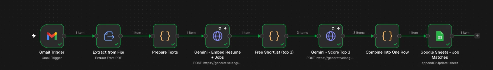
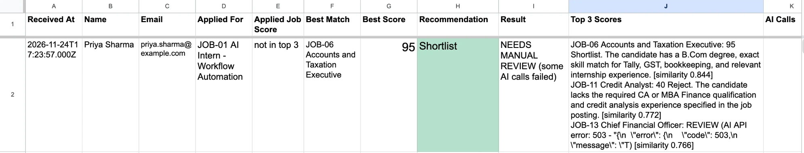

Automate the reading, keep the decision human
Two working prototypes. The first does what most automation does: screen resumes for one job. The second makes it efficient: check every resume against every opening, spending AI money only where it matters.
A resume email comes in. A scored row comes out.
Rubric out of 100: skills 40, projects 30, tools 15, education 10, clarity 5. Fixed one real bug on the way: Sheets read phone numbers like +91 90000 11101 as formulas, so cells are now stored exactly as sent.
The limit: it checks each resume against one job only. A candidate rejected for that job may be a strong fit for another open role, and that match is missed. Every resume also goes to the AI, whether it is close or not.
Same goal, smarter way: automate only the part that saves time and money
The same matcher as an 8-node n8n workflow
Gmail and PDF text work as in Prototype 1. One free Gemini embeddings call compares the resume with all 15 jobs, a Code node keeps the top 3, the AI scores only those 3, and another Code node applies the cut-off and writes one row per candidate to Google Sheets.

After a run: one resume goes in, the free shortlist sends 3 jobs to the AI, and one row comes out.

A real run where the free tier returned a 503 error for one of the 3 AI calls. The candidate was not lost: the row still arrived with the best match (95) and was flagged for manual review.
A new job opens. Search people you already have first.
| AI calls | 30 instead of 150 |
| AI calls saved | 80% |
| Tokens | 17,951 in · 1,554 out |
| Cost at Claude Haiku 5.5 prices | $0.0026 total |
| Per resume | about ₹0.02 |
| Shortlist step | ₹0, runs locally |
Haiku 5.5 list price: $0.10 in, $0.50 out per million tokens. Rupees at an assumed ₹88 per USD. Token counts are from Gemini; Claude counts slightly differently and thinks before answering, so ₹0.15 per resume is a safe upper estimate.
- Small test: 10 made-up resumes, 15 made-up jobs.
- To trust it: compare its picks with recruiters' picks on past, closed roles.
- Add keyword search (BM25) to catch exact terms like NISM or GST, as in my Ask Your PDF project.
- Real candidate data goes to a paid AI tier or a local model, never a free tier.
- The same pattern fits other documents, such as contracts or invoices: read, extract, check, and a person decides.